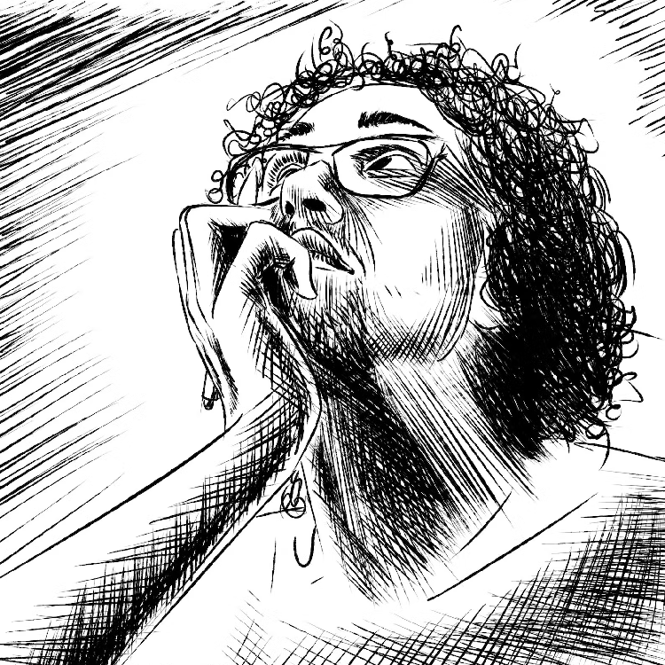
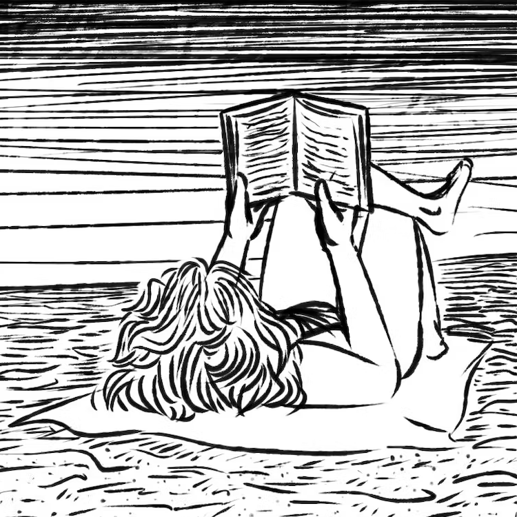

Artist: Victor Zanini

Dev: Manu Mello


"Talvez seja natural, uma vez que se desenha, querer contar historias com rabiscos.
Verdade seja dita, eu não gosto de livro sem imagem." (Victor Zanini)
Manu aqui. Esse sítio de ler quadrinhos nasce como meu primeiro projeto autoral de desenvolvimento web a ser terminado, ou algo do tipo, e como homenagem ao querido amigo que me deu a honra de ser incluída em suas narrativas imagéticas de cenas da minha e da nossa vida. No arquivo se encontra minha seleção pessoal de 7 das 23 bandas desenhadas da série Vários Nadas, que pode ser encontrada em sua totalidade por aqueles dispostos a desbravar meu layout em busca do link para o portfólio do autor. Brincadeira. Está no rodapé, no nome do dito cujo. Clica lá. Talvez no meu nome tenha alguma coisa também. Eu poderia deixar mais fácil em nome da "experiência do usuário", famosa UX, mas onde estaria a graça nisso? Afinal, sou dev, não designer. Gratidão por ler minhas bobagens até aqui, e pela apreciação do meu trabalho.